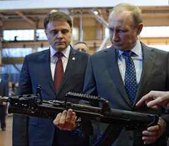

No discussion of contemporary geopolitical problems seems complete without mentioning the great white east. And indeed, no discussion about Russia seems complete without mentioning Vladimir Putin. Since the end of the years of excessive plundering by the post-Soviet Yeltsin regime, a former obscure KGB agent who rose in the political ranks like a star, has held direct or indirect control over the largest nation on earth.
Putin has done this by rotating his position of presidency with that of his devoted underling, Dmitri Medvedev. He was first elected to the highest office in 2000, and won re-election in 2004. After a stint as prime minister, he was re-elected president again in 2012. Due to a constitutional change, the next Russian elections will take place in 2018, and if victorious once more, Putin will have served the longest term as Russian head of state besides Stalin… that is, since the end of the Russian monarchy in 1917.
It’s no secret of course that the West despises Putin, but not for the reasons you might think. While much has been made of his former KGB status, his statements on the collapse of the Soviet Union, and appreciation of Communist geopolitical history, Vladimir Putin is probably as far away from a red as we’re likely to see, short of actually wearing the crown that Lenin’s revolutionary squads trampled in the early part of the last century.
The Cold War is long over, and few people fear the fading remnants of its losing side, from the blacked out wreck that is North Korea to Bulgarian chain-smokers in their eighties, waxing poetic about the glory of the “internationale.”
What the West does fear is real leadership, the kind that can somehow bypass the degenerative internal divisions of democracy, and put a population of almost 144 million at least somewhat behind their “sovereign.” According to the West, the only leaders the world needs are the nameless masters of international, globalist order. Nations and old conceptions of empire are relics of the past. We are one world now, and the liberal left is to lead that world out of its dark history. This is why real leaders terrify the Western elites.

Vladimir Putin hasn’t presented himself as a politician at all. Politicians don’t pose with tranquilized tigers, or descend to shipwrecks in submersibles like Bond villains. Politicians don’t have entire youth organizations devoted to them, with merchandise bearing their faces on street corners, made by the vendors’ own free will in response to real demand.
Increasingly, Putin has been presented under the ambiguous title of “leader,” and that is an accurate description. For all the chittering about oppression, propaganda, and a “motivated opposition,” the fact is that Russia doesn’t see any more of this kind of thing than many Western countries do, and certainly on a minuscule scale compared to unpopular dictatorships. Putin has more in common with the Sultan of Brunei than he does with Bashar Al Assad.
Under his leadership, Russia has reconquered a section of land that is extremely historically significant to the nation, namely Crimea, and has re-asserted itself on the global stage as a world power rather than a fading empire in the mold of the United Kingdom. Whether it is in Syria or Eastern Europe, he continually outfoxes his rivals, and comes off looking better for it in the eyes of neutral nations who have never been fully content with the status quo pecking order. He excels in making liberal presidents and prime ministers look weak and effeminate.
There is a certain magnetism to male leadership which can foster an undying loyalty, and it is this kind of male leadership which is rendered impossible via customary democratic procedure. One could in fact argue that democracy itself is a feminine procedure, and so it is no surprise that Putin and his ideological brethren have been steadily dismantling it.
While it is unlikely that Putin will ever don the regal title of monarch, he is currently laying the groundwork for such formal autocratic rule in Russia. This process is only encouraged by the increasing effeminacy and weakness of the decaying Western world. What sane leader wouldn’t take advantage of such a thing? You can bet the Chinese leaders have similar designs to exploit the weakness of the current global elite, though likely through sneaky plundering of third world countries.
If Putin is the new face of the familiar “anti-West” or “anti-Atlanticist” powers, then it should be noted during his tenure that this bloc has succeeded where previously it was in shambles. Credit this to masculine vs. feminine principles, or just smart geopolitics as you will.
Ivan Ilyin (1883 – 1954)
Ivan Ilyin, a dissident scholar banished from Russia after the Bolshevik Revolution, was no fan of democratic processes:
Every citizen is secured the right to crooked and deceptive political paths, to disloyal and treasonous designs, to the sale of his vote, to base motives for voting, to underground plots, unseen treachery and secret dual citizenship- to all those crudities which are so profitable to men and so often tempt them.
Ilyin’s body of work is highly popular within the Kremlin, as is the work of Eurasianist ideologue and prominent geopolitical critic Aleksandr Dugin, who borrows from the familiar Traditionalist school of René Guénon and Julius Evola. Though it is fair to say that oligarchic exploitation and opportunism are still the order of the day in Russia, there is a stirring current beneath the surface, an ideology to counter the West’s “liberal enlightenment values.”
When Russians speak of the glory of the Soviet Union, they are really speaking of the glory of the Russian Empire, the Third Rome. Whereas previously most governmental focus was on keeping the economy stable and tackling internal terrorism, now there are programs to combat low Russian birthrates, designs on foreign conquest and alliance, a build-up of military forces, and the liquidation of Russia’s “liberal” left who have been denounced by Dugin as a “fifth column.”
The philosopher who makes Glenn Beck cry
Because of the well-executed lobbying of those who want Russia to become a reactionary world power, laws have been passed against non-traditional sexual propaganda (infuriating the West), abortion rates may be cut in half by tough new measures on clinics, and the Russian Orthodox Church has gained back the regalia of a state institution even if not yet its old judicial power.
These changes are not oligarchic in their origin and in fact they often conflict with entrenched financial interests. Instead, they are imperial, royalist, and aristocratic. They are the resurgence of the values which animated the Black Hundreds, the last tsar’s fanatical and violent loyalists.
Of course, Putin’s co-operation with this ideological current has brought him problems which the Yeltsin presidency never faced. He has fallen afoul of America’s toughest president, Barack Obama (note the sarcasm), and the Eurocrats, yet still he persists, not like a politician but like a king. Why? Because he can. Slowly, the advantages brought through economic and technological progress are being broken upon the rocks of an inevitable cultural Darwinism, and when this occurs, the trajectory of a state’s values becomes far more important than its GDP. Strong cultures survive. Weak ones die.
Vladimir Putin has not asked for the loyalty of Russians in his venture to ensure their survival, he has seized their loyalty. The people of Russia, those present in the Priobskoye oil fields and the streets of St. Petersburg where he was once first deputy mayor, those who sleep in the earth the victims of war, famine, and revolution, and those yet to be born: they are with him, for although he is far from the tsar they hope for, he is the masculine leader who points them back to the three principles which have grounded Russia for almost all of her history. No amount of communist brainwashing could sever them from these: Orthodoxy, Autocracy, and Nationality.
Read More: Why Vladimir Putin May Be The Last Guardian Of Traditional Values
{kind=link}